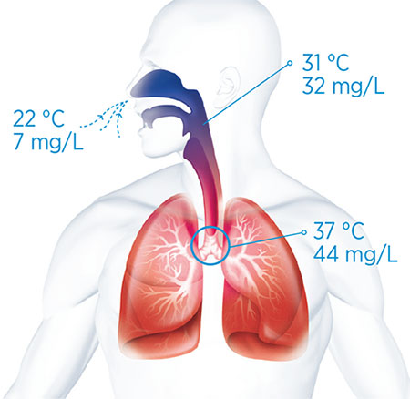
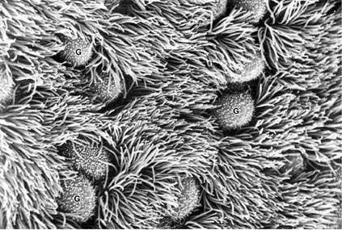
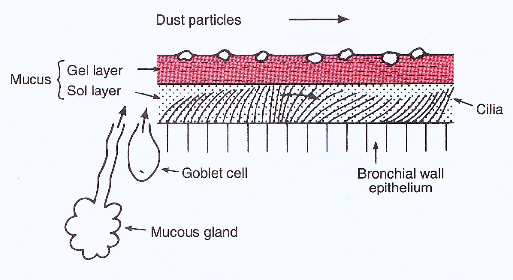
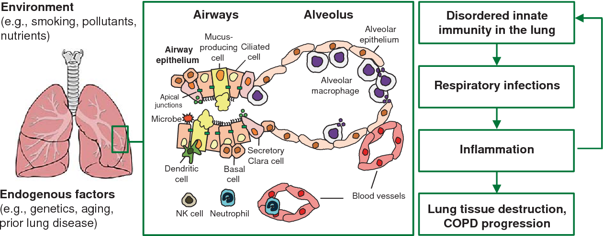

Functions of Conducting Zone
Conducting zone:
Passage of air
Warming
Humidification
Filtration
Immune surveillance
What is the source of the water vapor?
OUT of LUNGS
Role of the
mucociliary apparatus
in removal of particulates.
